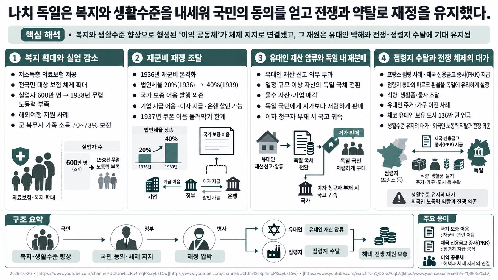
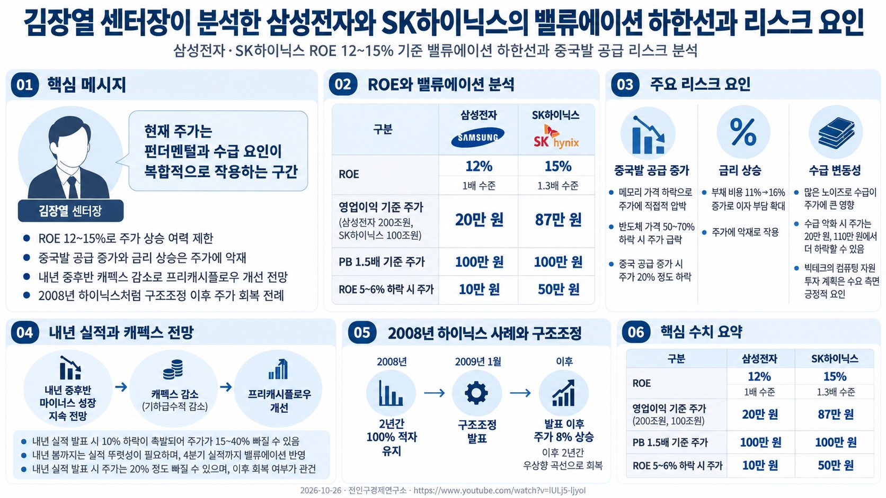

오늘의
AI 소식
· 시황
경제뉴스 →
기술 →
통합검색 →
TODAY'S BRIEFING
⌕
지우기
검색 결과
0건
전체 기간 · 경제
MARKET BRIEFING DAILY
← 오늘로
2026.10.26 (월)
나치 독일은 복지와 생활수준을 내세워 국민의 동의를 얻고 전쟁과 약탈로 재정을 유지했다. · 김장열 센터장이 분석한 삼성전자와 SK하이닉스의 밸류에이션 하한선과 리스크 요인
시황 브리프 · 종합
⧉
시황 브리프 · 2026-10-26
나치 독일은 복지와 생활수준을 내세워 국민의 동의를
얻고 전쟁과 약탈로 재정을 유지했다
. · 김장열 센터장이 분석한 삼성전자와 SK하이닉스의 밸류에이션 하한선과 리스크 요인
오늘 유튜브 · 경제
2편
프로그램별 리포트
나치 독일은 복지와 생활수준을 내세워 국민의 동의를 얻고 전쟁과 약탈로 재정을 유지했다.
https://www.youtube.com/channel/UCIUni4ScRp4mqPXsxy62L5w
⧉

영상은 나치 독일의 복지 확대와 세금·재정 정책이
국민의 생활수준과 체제 지지에 연결된 과정을 설명한다
. 실업자 600만 명에서 1938년 노동력 부족으로 바뀐 변화와 저소득층 의료보험 등 정책이 소개된다. 재군비 재정은 법인세율을 1936년 20%에서
1939년 40%로 올리고 국가 보증 어음 발행에 의존했다
. 유대인 재산 신고와 몰수, 독일 국민에 대한 저가 매각 및 점령지 자원 수탈이 재원과 혜택의 한 축이었다. 저자는 전쟁을 국민 수탈만으로 설명하지 않고, 다수의 이익과 동의가 체제 유지에 연결됐다고 해석한다.
김장열 센터장이 분석한 삼성전자와 SK하이닉스의 밸류에이션 하한선과 리스크 요인
전인구경제연구소
⧉

삼성전자와 SK하이닉스의 ROE는 각각 12%,
15%로 1~1.3배 수준에 머물러 있다
. 영업이익 200조원, 100조원 기준 주가는 삼성전자
20만 원, SK하이닉스 87만 원으로 산출된다
. 중국발 공급 증가와 금리 상승으로 인한 부채 비용 증가는 주가에 악재로 작용한다. 내년 중후반 캐펙스 감소와 매출 성장률 둔화 시 프리캐시플로우가 개선될 것으로 전망된다. 2008년 하이닉스 사례처럼 극단적 적자 지속 시에도 구조조정 이후 주가가 회복된 전례가 있다.